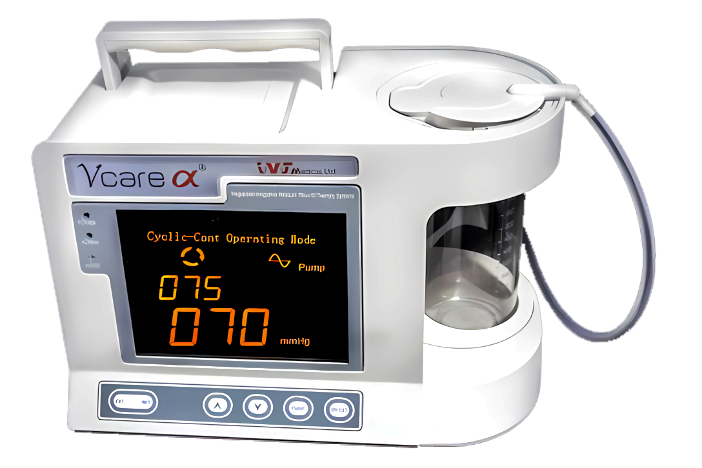

Research, Innovation & International Work
From the laboratory to the operating room: the technologies invented by Dr. Topaz are changing the way the world treats wounds.

TopClosure® Tension Relief System
The wound closure system invented by Dr. Topaz enables gradual, controlled stretching of the skin and primary closure of large, high-tension wounds. The system is FDA cleared, was reviewed by the UK's National Institute for Health and Care Excellence (NICE) and is applied in hospitals around the world.
It is presented in professional publications as one of the leading Israeli inventions in wound care, and serves civilian medicine, military medicine and mass-casualty scenarios.

Regulated oxygen-enriched negative pressure therapy (RO-NPT)
Dr. Topaz developed a method combining negative pressure therapy with controlled oxygen enrichment and continuous irrigation of the wound. The method confronts anaerobic infections and accelerates the healing of infected, hard-to-heal wounds.
He subsequently developed a unique approach of local delivery of antibiotics at ultra-high concentration directly into the wound, enabling treatment of resistant bacteria, preservation of infected pacemakers and healing of sternal infections after cardiac surgery.
International activity
China: Teaching, Surgery & Research
More than a decade of continuous activity in China: Visiting Professor at university hospitals, lectures and demonstration surgery, and research collaborations in wound healing.
The Sichuan Earthquake, 2008
Dr. Topaz volunteered to treat casualties of the devastating earthquake, received recognition from the Premier of China, and initiated a sister-hospital alliance between the Hillel Yaffe Medical Center and the Deyang Central Hospital.
Training the Next Generation
Academic director of medical continuing-education programs in China and Asia for the Hebrew University's Magid Institute, and a sought-after speaker at international congresses in Europe, Asia and the Americas.
Selected publications in international journals
Dr. Topaz has authored dozens of scientific papers and chapters in the professional literature. A selection:
- The TopClosure® 3S System, for skin stretching and a secure wound closureEuropean Journal of Plastic Surgery, 2012
- TopClosure Tension Relief System for wound closure: Medtech Innovation Briefing (MIB97)National Institute for Health and Care Excellence (NICE), UK
- Regulated oxygen-enriched negative pressure-assisted wound therapy (RO-NPT)Clinical publications in international surgery and wound healing journals
- TopClosure® tension-relief system for immediate primary abdominal defect repairJournal of International Medical Research, 2020
- Delayed primary wound closure after extensive abdominal wall resection for infection and malignancyCase reports, peer-reviewed, 2021
- Chemical Reactions in Biological Media Exposed to High-Intensity Ultrasound Energy: Reaction Products, Mechanisms and Possible Clinical ImplicationsPh.D. dissertation, Ben-Gurion University, 2006
Registered Patents
Among Dr. Topaz's registered patents: a biocompatible injectable solution for ultrasound-assisted surgery (EP 1020180) and wound closure devices (US D652145), alongside the technologies commercialized through IVT Medical.
Research Supervision
Dr. Topaz has supervised M.D. and Ph.D. research at Israeli universities and hospitals, in fields ranging from free-radical protection in eye surgery to novel methods for managing complicated wounds, and has served as a Ph.D. thesis examiner internationally.
This global knowledge is at your service
Every patient at the clinic benefits from Dr. Topaz's accumulated research and clinical experience.